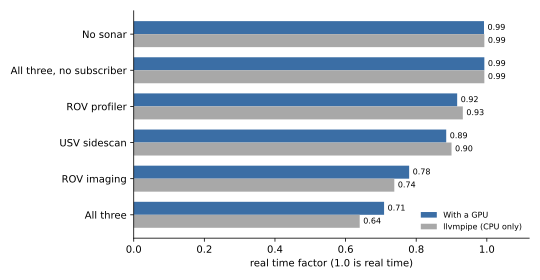

Sonar performance
A simulated sonar is one of the more expensive sensors in a world. Consequently, an active sonar should be in a scene only when the scenario needs it. Each ping
renders the scene from the sonar,
reads the images back from the GPU, and
turns tens of thousands of hits into beams and samples on the CPU.
This page is a rough assessment from one representative case, to inform how you use the sonars: how much each one slows a world, and how much a GPU matters. The numbers are anecdotal, each measured once on one machine.
The case
The shipwreck world (sonar_shipwreck.sdf), with a BlueROV2 4 m down beside the wreck and a BlueBoat on the surface near it, both in view of the wreck. Six sets of sonars, each sonar at its default 10 Hz and, except in the last, with a subscriber on its topic, since a sonar pings only while something listens:
none;
the ROV’s imaging sonar (Sonoptix ECHO, 768 samples to 15 m);
the BlueBoat’s sidescan (Omniscan 450 SS, both sides);
a profiling sonar on the ROV (Surveyor 240-16, looking down);
all three at once;
all three at once, with nobody subscribed.
Each ran headless for 30 s, once with the GPU and once with llvmpipe, Mesa’s software renderer on the CPU, on a workstation with 12 CPU cores (24 threads) and an NVIDIA RTX 2070 SUPER, inside drydock’s maritime container.
Results

The shipwreck world’s real time factor for each set of sonars, with a GPU and with llvmpipe. The world runs no faster than real time, so 1.0 is its ceiling.
The imaging sonar costs the most: it alone takes the world to 0.78 of real time. Its fan is wide and tall, so it draws far more pixels per ping than the sidescan’s and profiler’s thin fans.
The costs add up: all three together run at about 0.7 of real time (0.71 with the GPU, 0.64 without).
A sonar nobody listens to costs almost nothing: with all three fitted and no subscriber, the world runs at 0.99, as it does with no sonar.
A GPU makes little difference: llvmpipe is within 0.05 of the GPU for each sonar alone and 0.07 behind with all three, and the same within the noise for the sidescan and the profiler.
Why the GPU matters little

One ping. Only the shaded step uses the GPU; the simulation waits for the rendering thread, and the sonar’s worker runs alongside it.
A ping has four significant steps, and only the first, drawing the images, uses the GPU. The other three, turning the images into hits, the engine, and making the published message, run on the CPU whatever the hardware, so a GPU speeds up only part of the work. Without one, llvmpipe draws on the CPU instead, at a cost that stays modest in a scene of this size.
The software involved:
gz-sim’s Sensors system, which every vehicle world loads, owns the rendering thread; gz-sim waits for it whenever a sensor is due, so its time is what slows the world.
gz-rendering (Ogre 2) draws the images, on the GPU if there is one.
gz-maritime-sonar-system, the sonar plugin, asks for each ping’s render and gives every sonar sensor a worker thread of its own (the sidescan’s two sides are two sensors, so two workers). On each ping the worker runs thegz_sonarmodel, and for the engine step it hands the work to one pool of threads shared by every sonar in the process: one per hardware thread, at most eight in all, the worker included. Sonars whose pings coincide take turns at the pool, so a small ping can wait for a large one;<threads>1</threads>in a sonar’s<gz:sonar>keeps its pings on its own worker, with no wait. The worker runs alongside the simulation and slows it only if pings arrive faster than it finishes them.
Recommendations
All sonar sims are computationally costly, so activate a sonar only where the scenario uses it. A sonar with no subscriber does not ping, so one that is fitted but not listened to is nearly free.
Imaging sonar (wide beam) sim is more costly than the profiling and side scan (narrow beam). A single imaging sonar costs about a fifth of real time, a sidescan about a tenth, a profiler less.
A GPU is not required for scenes of this size. Without one, expect about the same real time factor.
More CPU cores help more than a faster GPU: most of each ping’s work is on the CPU. The engine step of all the sonars together uses at most eight of them; each sonar’s worker and the simulation use the others.
To make a sonar cheaper, lower its rate, its range window and samples, or
rays_per_beam(the advanced parameters in the design’s SDF section), at a cost in fidelity to check on the scene at hand. Truth labels cost little: the segmentation they come from is drawn anyway.
To try llvmpipe in drydock, start gz sim with __GLX_VENDOR_LIBRARY_NAME=mesa LIBGL_ALWAYS_SOFTWARE=1, and for headless rendering also __EGL_VENDOR_LIBRARY_FILENAMES=/usr/share/glvnd/egl_vendor.d/50_mesa.json MESA_LOADER_DRIVER_OVERRIDE=kms_swrast. Ogre’s log, ~/.gz/rendering/ogre2.log, names the renderer it used.